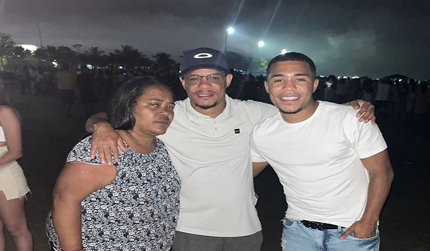

1 de Janeiro de 2023
Ano novo na Praia de Riviera com meus pais e familiares

É sempre muito importante passar as viradas de ano ao lado das pessoas
que mais amamos e nos importamos pois levo como uma forma de renovar
as energias e expectativas para um novo ano que irá se suceder e,
estar perto de pessoas que torcem por você, te apoiam e te amam é
importante para esse inicio de ano. Nessa oportunidade estive rodeado
dos meus pais, irmãos, tios, avós, primos e sobrinhos.